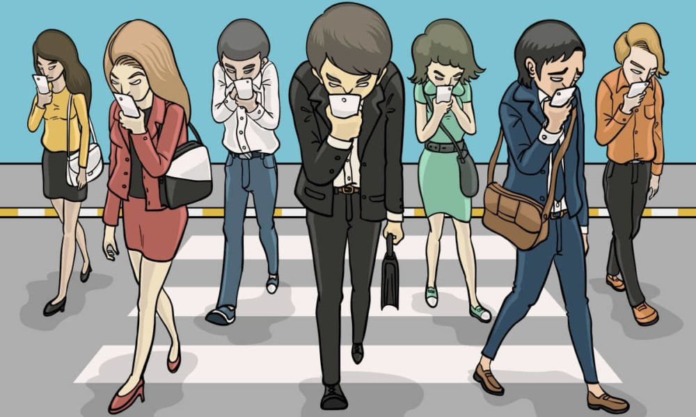
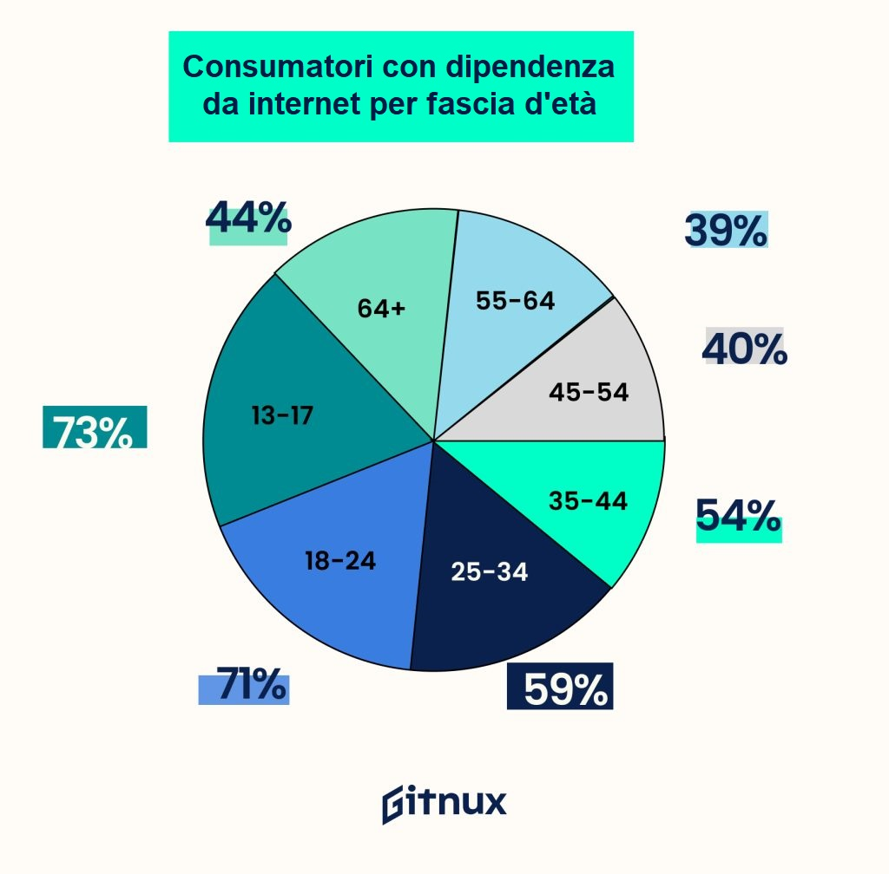

La dipendenza digitale è una condizione in cui una persona sviluppa una forte dipendenza dai dispositivi digitali
come smartphone, tablet, computer, videogiochi e social media. È una problematica relativamente nuova, ma sempre
più diffusa, che sta interessando sempre più persone nel mondo e che può influire negativamente sulla salute mentale, fisica e sociale delle persone. La dipendenza
digitale si manifesta in diverse forme e può coinvolgere qualsiasi tipo di dispositivo digitale.
Una delle forme più comuni di dipendenza digitale è la dipendenza dai social media.
Ci sono diversi fattori che possono contribuire allo sviluppo della dipendenza digitale. Uno di questi fattori è
la gratificazione immediata che i dispositivi digitali possono offrire. Inoltre, la dipendenza digitale può
essere influenzata da problemi di salute mentale preesistenti come l'ansia e la depressione. In alcuni casi,
la dipendenza digitale può essere causata da una mancanza di supporto sociale nella vita reale.
Per prevenire la dipendenza digitale, è importante limitare il tempo trascorso sui dispositivi digitali,
partecipare ad attività al di fuori della tecnologia e cercare di mantenere relazioni sociali significative
nella vita reale. Inoltre, è importante cercare supporto da amici, familiari o professionisti della salute mentale
se si pensa di avere una dipendenza digitale. La dipendenza digitale si manifesta in diverse forme e può
coinvolgere qualsiasi tipo di dispositivo digitale.

DAI SOCIAL MEDIA
Una delle forme più comuni di dipendenza digitale, la dipendenza dai social media.
Le persone che soffrono di questa dipendenza trascorrono ore a navigare
sui social media, controllando costantemente le notifiche, cercando approvazione
o comparandosi con gli altri. Questo comportamento può portare a
sentimenti di ansia, invidia e talvolta depressione e isolamento sociale.
DAI VIDEOGIOCHI
Un'altra forma comune di dipendenza digitale è la dipendenza da videogiochi.
Le persone che soffrono di questa dipendenza possono giocare ai videogiochi
per ore ogni giorno, trascurando altre attività come studio, lavoro, le relazioni
interpersonali e l'attività fisica. Ciò può portare a problemi di salute mentale, inoltre problemi fisici come
la postura scorretta, problemi alla vista e l'obesità.
DA INTERNET
Infine, la dipendenza da internet è un'altra forma comune di dipendenza digitale.
Le persone che soffrono di questa dipendenza possono trascorrere molte ore stando online, navigando
'a caso' senza uno scopo specifico e trascurando qualsiasi attività quotidiana. Così come le altre dipendenze,
questo comportamento può portare a vari problemi di salute (come riportato nei precedenti casi).
DIPENDENZA DIGITALE IN ITALIA

In Italia, uno studio condotto nel 2020 dal Ministero della Salute ha rilevato che il 28,7% dei giovani tra i 15 e i 19 anni presenta
un alto rischio di dipendenza da internet.
Inoltre, il 12,5% degli adulti ha dichiarato di passare più di 4 ore al giorno sui social media.
A livello internazionale, uno studio condotto nel 2020 su oltre 16.000 studenti universitari in 11 paesi ha rilevato che il 5,7% dei partecipanti aveva
una dipendenza da internet grave o moderata. Inoltre, un altro studio condotto su 6.500 partecipanti provenienti da 6 paesi ha rilevato
che il 6% dei partecipanti aveva una dipendenza da smartphone.
Secondo l'Organizzazione Mondiale della Sanità (OMS), la dipendenza digitale non è ancora riconosciuta come un disturbo mentale a sé stante,
ma viene inclusa in altre categorie di disturbi come la dipendenza comportamentale non specificata. Tuttavia, l'OMS ha riconosciuto
la necessità di ulteriori ricerche sulla dipendenza digitale per comprendere meglio la sua portata e gli effetti sulla salute.
In generale, la dipendenza digitale è un fenomeno complesso che sta diventando sempre più rilevante nella società moderna.
Molti esperti stanno lavorando per comprendere meglio i fattori che contribuiscono alla dipendenza digitale e sviluppare strategie
per prevenirla e trattarla.